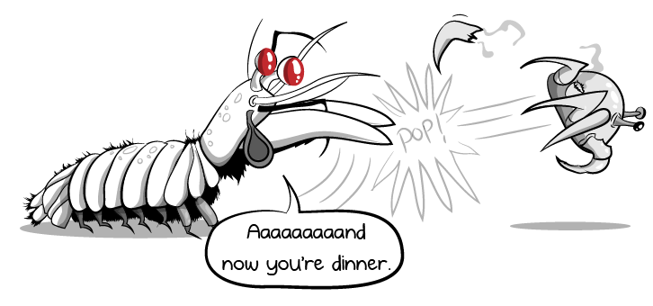

Dados gerais
- Nome cientifico: Odontodactylus scyllarus
- Reino: Animalia
- Filo: Arthropoda
- Subfilo: Crustacea
- Classe: Malacostraca
- Subclasse: Hoplocarida
- Ordem: Stomatopoda

Fatos sobre o Stomatopoda
Enxergam tudo!
Os Stomatopodas possuem 16 cones de recepcao de cor, aproximadamente 5x mais que os humanos e 3x que as borboletas.
Extremamente fortes!
A potencia predatoria de um Stomatopoda eh gigantesca, tendo uma enorme forca em suas garras frontais. Letal ate para os humanos!!
